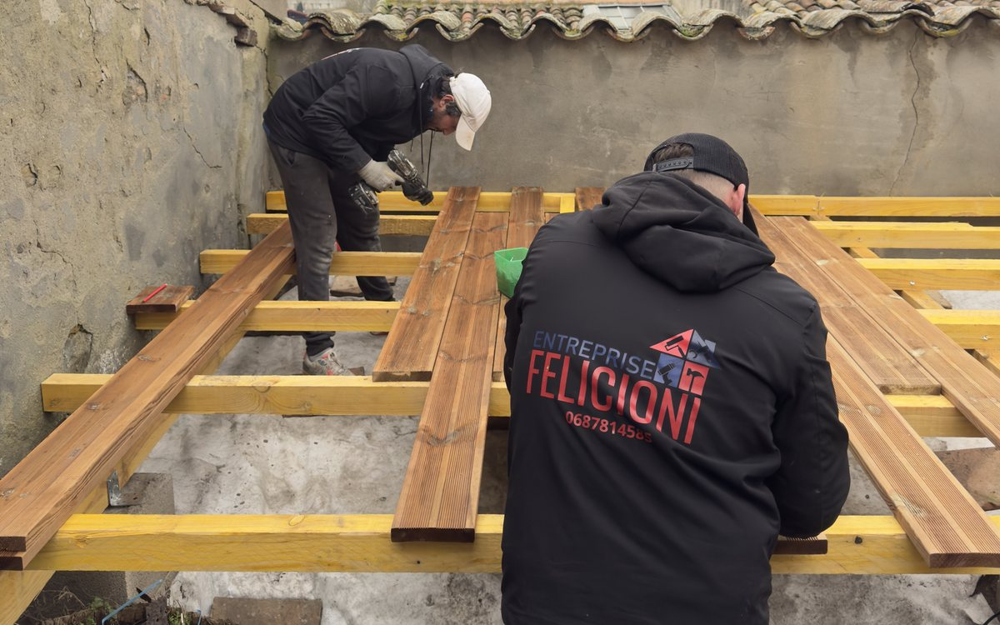
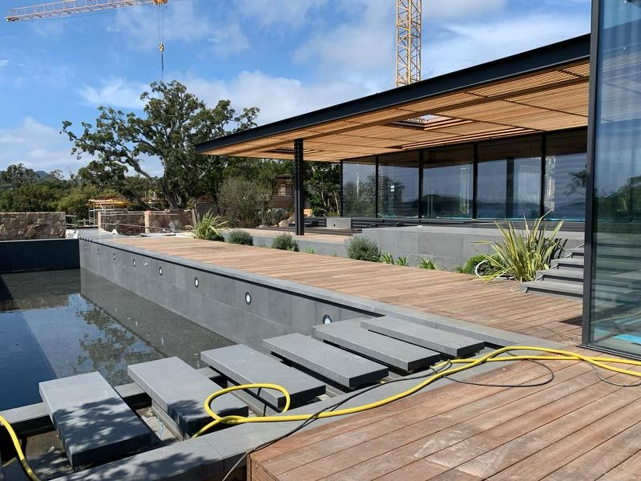

Accueil › Conseils › Terrasse en bois à Toulouse
Aménagement extérieur
Terrasse en bois à Toulouse : combien ça coûte vraiment

C'est la première question de chaque rendez-vous, souvent avant même qu'on ait mesuré quoi que ce soit : « une terrasse en bois, ça coûte combien ? » La réponse honnête tient en une phrase. Entre 60 et 200 € du m² posé, et l'écart se joue sur des choses que le client ne voit jamais une fois le chantier terminé.
Voici comment se construit ce chiffre, ce qui le fait bouger, et les lignes que certains devis oublient de mentionner.
Trois postes, pas un seul
Un devis de terrasse se lit sur trois lignes : la structure qui porte, les lames que vous voyez, la main-d'œuvre qui assemble. La plupart des comparaisons entre entreprises tournent court parce qu'elles ne regardent que la deuxième.
La structure, ce sont les plots réglables, les lambourdes, parfois une dalle béton. Elle pèse souvent 30 à 40 % du budget et disparaît sous les lames le dernier jour. C'est pourtant elle qui décide si votre terrasse tiendra droit après trois hivers. Une lambourde sous-dimensionnée ou espacée trop large donne un platelage qui plie sous le pas au bout de deux saisons, quelle que soit la qualité des lames posées dessus.
Le NF DTU 51.4, le document de référence pour les platelages extérieurs en bois, impose une classe d'emploi 4 pour les lames comme pour les lambourdes, et prévoit un double lambourdage aux abouts de lames pour que l'eau s'évacue au lieu de stagner dans le bois de bout. Ce détail coûte quelques dizaines d'euros de bois en plus. Il vous fait gagner des années.
Le prix au m² selon l'essence
Les fourchettes ci-dessous correspondent au marché français en 2026, fourniture et pose comprises, structure standard sur plots.
| Matériau | Prix au m² posé | Ce qu'il faut savoir |
|---|---|---|
| Pin traité autoclave classe 4 | 60 à 100 € | Le meilleur ticket d'entrée. Demande un saturateur chaque année. |
| Composite (WPC) | 90 à 200 € | Aucun saturateur. Chauffe davantage en plein soleil. |
| Cumaru | 100 à 160 € | Bon compromis densité, durabilité, prix. |
| Ipé | 120 à 200 € | Le plus dur et le plus durable. Le plus cher aussi. |
Fourchettes relevées sur Travaux Avenue et ABC Travaux, août 2026. Ce sont des ordres de grandeur nationaux, pas un tarif d'entreprise.
Pour une terrasse de 25 m², ça donne un budget qui va de 1 500 € en pin traité posé simplement à 5 000 € en ipé avec finitions. Le même espace, le même travail de pose, un rapport de un à trois sur la facture.
Ce que le tableau ne dit pas
Quatre éléments déplacent un devis bien plus que le choix de l'essence.
- La hauteur sous terrasse. Poser à 5 cm du sol sur un support plan, c'est rapide. Rattraper 60 cm de dénivelé demande une ossature complète, parfois un muret, et vous fait changer de catégorie de prix.
- L'accès au chantier. Une cour de centre-ville où tout passe à la brouette par un couloir n'a rien à voir avec un jardin accessible en camionnette. Ça se compte en journées d'homme.
- Les découpes. Un rectangle se pose vite. Contourner un bassin, un arbre, un angle de mur, des margelles, ça multiplie les coupes et les chutes.
- Les finitions. Marches, plinthes de rive, éclairage encastré, trappe de visite : chacune est un poste à part que beaucoup de devis passent sous silence, et que vous découvrez au moment de la pose.
Un devis sérieux détaille ces lignes. S'il tient en une ligne « terrasse bois 25 m² », vous ne pouvez rien comparer.
Une terrasse autour d'une piscine
C'est la demande la plus fréquente et la plus technique. Le bois travaille au contact de l'eau chlorée, les margelles imposent un niveau que vous ne pouvez pas déplacer, et la pente d'évacuation doit éloigner l'eau du bassin sans créer de flaque contre le mur.
Deux points font la différence sur ce type de chantier. Le jeu entre les lames doit rester constant pour que l'eau file sans retenir les feuilles. Et les abouts de lames, la partie la plus fragile du bois, doivent reposer sur un double lambourdage, jamais dans le vide.

Quel bois sous le climat toulousain
Autour de Toulouse, le bois encaisse deux contraintes opposées. Des étés secs à 38 °C qui font travailler les lames et blanchir la surface, puis des hivers humides où l'eau stagne si l'évacuation est mal pensée. Cette alternance fatigue plus le matériau qu'un climat régulier.
Le pin traité autoclave classe 4 tient très bien si vous le saturez chaque printemps. Sans entretien, il grise en une saison et se fend en surface au bout de quelques années. Le cumaru et l'ipé, plus denses, encaissent mieux les écarts et grisent lentement, mais leur prix double le budget. Le composite supprime le saturateur, ce qui séduit beaucoup de clients, au prix d'une surface qui chauffe nettement plus sous le soleil du Sud-Ouest. Sur une terrasse plein sud sans ombrage, ça se sent pieds nus en juillet.
Faut-il déclarer sa terrasse en mairie
Une terrasse de plain-pied, posée au niveau du sol et qui ne crée pas d'emprise au sol, échappe en général à toute formalité. Dès qu'elle est surélevée, qu'elle repose sur une structure porteuse ou qu'elle modifie l'aspect extérieur de la maison, une déclaration préalable de travaux devient nécessaire.
Les seuils exacts dépendent du plan local d'urbanisme de votre commune, et ils varient réellement d'une commune à l'autre dans l'agglomération. Service-public.fr renvoie d'ailleurs vers la mairie pour connaître les règles applicables à votre parcelle. Un appel au service urbanisme avant de commander le bois vous évite un courrier désagréable trois mois après la pose.
L'entretien, année après année
Le programme est court. Au printemps, un lavage à l'eau claire et une brosse dure dans le sens des fibres suffit à retirer le vert et les dépôts de l'hiver. Ensuite, un saturateur une fois par an sur les essences qui en demandent, appliqué sur bois sec et propre.
Un conseil qui va à l'encontre de ce que font beaucoup de propriétaires : rangez le nettoyeur haute pression, ou tenez-le à bonne distance et à faible pression. À bout portant, la lance creuse les fibres tendres entre les veines, laisse une surface pelucheuse qui retient l'eau, et accélère le grisaillement qu'elle était censée corriger.
Une terrasse déjà noircie n'est pas perdue pour autant. Un dégriseur puis un saturateur lui rendent sa teinte, à condition que le bois soit encore sain en profondeur.
Combien de temps dure le chantier
Pour 20 à 30 m² sur plots réglables, comptez 3 à 5 jours de pose une fois le support prêt. C'est le support qui allonge le calendrier. Une dalle béton à couler impose une à deux semaines de séchage avant que les lambourdes ne viennent dessus, et ce délai ne se compresse pas.
Ajoutez le délai de livraison du bois, entre une et trois semaines selon l'essence et la section. Un chantier lancé fin mars pour une terrasse utilisable en juin, c'est un calendrier réaliste.

Questions fréquentes
Quel est le prix d'une terrasse en bois au m² ?
Entre 60 et 200 € du m² posé selon l'essence. Le pin traité autoclave classe 4 ouvre la fourchette, le cumaru et l'ipé la ferment. La structure sous les lames représente souvent 30 à 40 % du total.
Faut-il déclarer une terrasse en bois en mairie ?
De plain-pied et sans emprise au sol, en général non. Surélevée ou posée sur une structure, une déclaration préalable devient nécessaire. Les seuils dépendent du plan local d'urbanisme, appelez le service urbanisme de votre commune avant de commander.
Quel bois choisir dans la région toulousaine ?
Le pin autoclave classe 4 pour le budget, à condition de le saturer chaque année. Le cumaru ou l'ipé pour oublier l'entretien lourd et accepter le grisaillement lent. Le composite si vous ne voulez plus jamais toucher un pinceau, en sachant qu'il chauffe davantage en plein soleil.
Combien de temps dure la pose ?
3 à 5 jours pour 20 à 30 m² sur plots, support prêt. Une dalle béton à couler ajoute une à deux semaines de séchage avant la pose des lambourdes.
Peut-on poser une terrasse bois sur une dalle béton existante ?
Oui, et c'est même la configuration la plus simple si la dalle est saine et à peu près plane. Les lambourdes viennent sur plots réglables qui rattrapent les défauts de niveau et ménagent la ventilation sous le platelage. Un contact direct entre lambourde et béton, sans lame d'air, condamne le bois à moyen terme.
Intervenez-vous en dehors de Toulouse ?
Oui. Nous sommes basés à Tournefeuille et nous intervenons sur tout l'ouest toulousain, mais aussi sur des chantiers plus éloignés : Merville, Saint-Orens-de-Gameville, Pompertuzat, Pujaudran, et jusqu'à Castelnaudary pour des rénovations complètes.